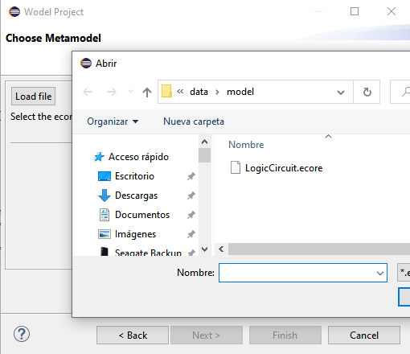
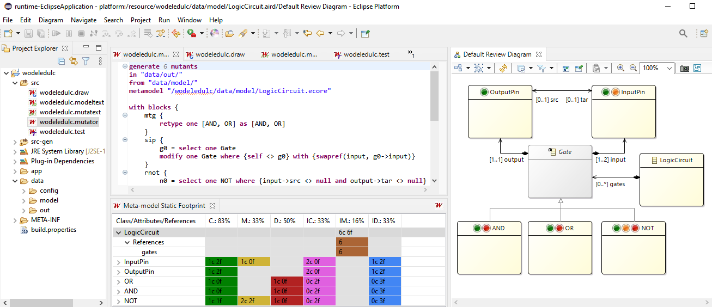
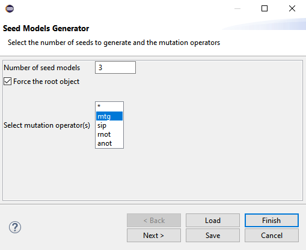
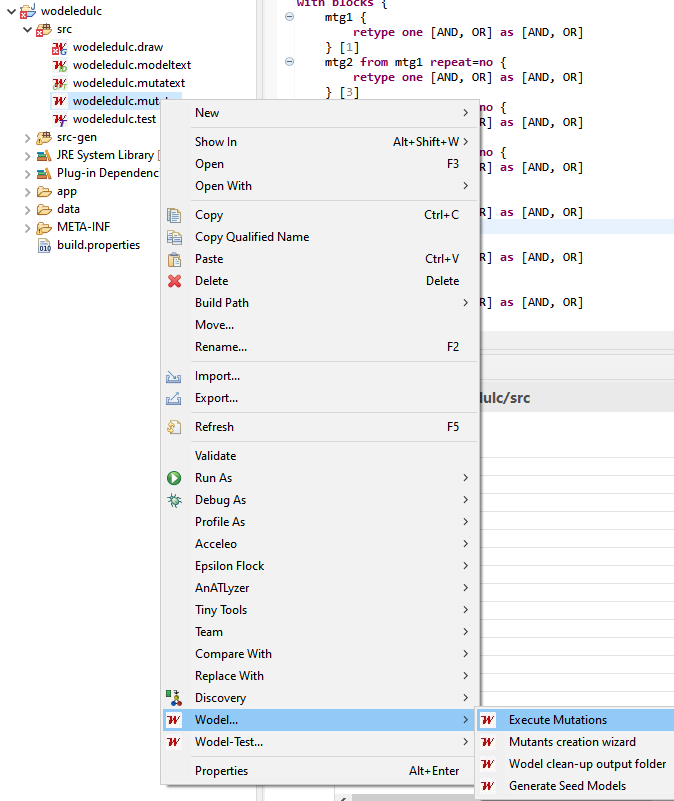
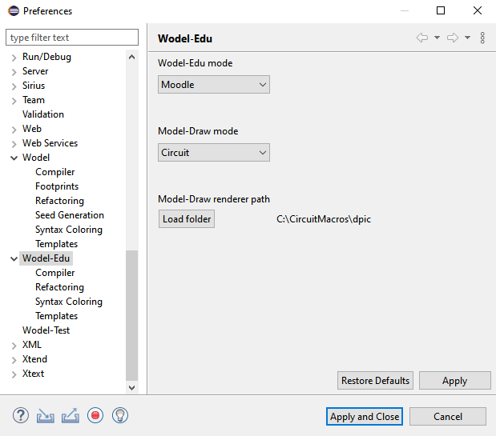
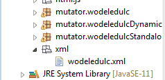
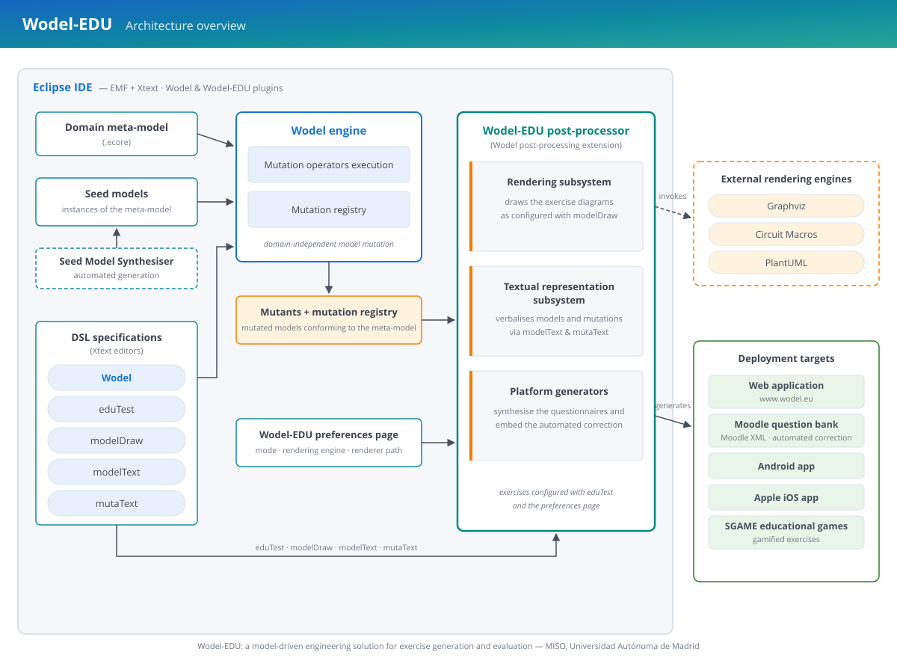

Wodel-EDU: a model-driven engineering solution for exercise generation and evaluation
Wodel-EDU extends Wodel with the automated generation of educational exercises. It supports seven exercise types:
- Alternative response: students decide whether a diagram or its textual representation is correct.
- Multiple-diagram choice: students select the correct diagram from several alternatives.
- Multiple-text choice: students select the correct textual representation from several alternatives.
- Multiple emendation choice: students select the textual options that correct the displayed diagram.
- Matching pairs: students match each statement on the left with the correct option in a drop-down list.
- Missing words: students fill the gaps with options from drop-down lists so that the completed text matches the statement.
- Text drag and drop: students fill the gaps by dragging labelled text options from the available categories so that the completed text matches the statement.
The family of DSLs
Wodel-EDU uses four DSLs in addition to Wodel:
eduTest: configures the questionnaires and defines the exercises:
navigation=free
MultiChoiceDiagram simple {
retry=no
description for 'exercise4.model' = 'Select which of these automata
accepts only "a*bab*"'
}
MultiChoiceEmendation complex {
retry=no, weighted=no, penalty=0.0,
order=options-descending, mode=checkbox
description for 'exercise5.model' = 'Select the required changes so that
the automaton accepts only "a+b+"'
}
MatchPairs rfs1, mts2, rfs2 {
retry=no
description for 'exercise6.model' = 'Select which of these options modifies
the above automaton to accept only
the language defined by ' %text('reg-exp')
}
MissingWords mtsrfs1 {
retry=no
description for 'exercise7.model' = 'Complete the following text with the
options for each gap that modify this automaton
to accept only the language defined by "ab(ba)*"'
}
modelDraw: configures the graphical visualisation of the models. It currently supports Graphviz, Circuit Macros and PlantUML as rendering engines (optional):
metamodel "http://dfaAutomaton/1.0"
Automaton: diagram {
State(isInitial): markednode
State(not isFinal): node shape=circle
State(isFinal): node shape=doublecircle
Transition(src, tar): edge label=symbol.symbol
}
modelText: configures the textual representation of the model elements (optional):
metamodel "http://dfaAutomaton/1.0"
>State: State %name
>State(isFinal): final
>State(isInitial): initial
>Transition: Transition %symbol.symbol
>Transition.tar: target
>Transition.src: source
mutaText: configures the text options used in multiple emendation, matching-pairs, missing-words and text drag-and-drop exercises (optional):
metamodel "http://dfaAutomaton/1.0"
>TargetReferenceChanged: Change %object from %fromObject
to %toObject with new %refName %oldToObject /
Change %object from %fromObject to %oldToObject
with new %refName %toObject
>AttributeChanged: Change %object to %oldValue /
Change %object to %value
Overview
- Automated generation of diagram-based exercises from domain meta-models
- Domain independence: applicable to any modelling language defined with EMF/Ecore
- Seven configurable exercise types, from alternative response to text drag and drop
- Automated correction and evaluation of the students' answers
- Multi-platform deployment: web, Moodle, Android and Apple iOS
- Gamification support through the integration with SGAME
Wodel-EDU follows a model-driven, generative approach to exercise production. Instead of authoring each exercise by hand, instructors describe the domain of interest by means of a meta-model, and Wodel-EDU derives families of exercises automatically by mutating seed models with the Wodel DSL. Since the approach operates at the level of the meta-model, it is independent of the particular modelling notation, enabling its application to heterogeneous domains such as finite automata, electronic circuits or UML class diagrams.
Depending on the configuration expressed with the eduTest DSL, Wodel-EDU produces different kinds of questions from the generated mutants: the correct and mutated models become the alternatives of multiple-choice questions, the applied mutations become the emendation options of correction questions, and their textual renderings feed matching-pairs, missing-words and drag-and-drop exercises. The generated questionnaires embed the information required for their automated correction, so that the evaluation of the students' answers requires no manual intervention.
How Wodel-EDU works
1. Create a Wodel-EDU project from a domain meta-model
Users begin by creating a new Wodel project in Eclipse (File → New → Other... → Wodel → New Wodel Project) and selecting the Wodel-EDU post-processing extension. A wizard guides the project creation process, where the domain meta-model (an Ecore file) is provided so that the Wodel-EDU engine can load it. This meta-model determines the modelling language the exercises will be about, and constrains the space of valid mutations.

New Wodel-EDU project wizard. The domain meta-model provided at this step defines the modelling language targeted by the generated exercises.
2. Specify the mutations and the exercises with the Wodel-EDU DSLs
A Wodel-EDU project is specified through a family of domain-specific languages. The Wodel DSL describes the mutation operators of interest and their intended execution schedule; the modelDraw DSL configures the graphical rendering of the models; the modelText and mutaText DSLs define the textual representation of the models and of the applied mutations; and the eduTest DSL configures the questionnaires, selecting the exercise type of each assignment among the seven supported kinds and features such as navigation, reattempts, penalties or option ordering. The Wodel-EDU IDE provides code completion and validation for all these languages.

The Wodel-EDU IDE. The mutation operators, the graphical and textual representations, and the questionnaire configuration are specified with dedicated DSLs supported by code completion and validation.
3. Provide or synthesise the seed models
The mutation process is executed on a set of seed models conforming to the domain meta-model. These seed models can be handcrafted by the instructor or generated automatically with the seed model synthesiser provided by Wodel-EDU (right-click on the .mutator file → Wodel... → Generate seed models). Automated synthesis is useful both to assess the validity of the mutation operators and to generate large sets of exercises with little effort.

Seed model synthesis wizard. Batteries of seed models conforming to the domain meta-model are generated automatically and stored in the model folder of the project.
4. Generate the mutants and the exercises
Executing the mutations (right-click on the .mutator file → Wodel... → Execute Mutations) applies the specified mutation operators to the seed models, producing a set of mutant models together with a registry of the applied changes. When the mutant generation process ends, the exercises are generated automatically by combining the mutants, the registered mutations and the graphical and textual representations configured with the different DSL specifications.

Mutant and exercise generation. The exercises are derived automatically from the generated mutants once the mutation process has ended.
5. Configure the target platform
Wodel-EDU provides a dedicated preferences page (Window → Preferences → Wodel-Edu) to configure the generation process. The user selects the Wodel-EDU mode — web, Moodle, Android or iOS — which determines the deployment platform of the generated questionnaires, the modelDraw rendering engine — Graphviz or Circuit Macros — used to draw the diagrams, and the renderer path where the binaries of the graphical renderer are stored on the local machine.

Wodel-EDU preferences page. The generation mode selects the target platform of the questionnaires, and the modelDraw options configure the diagram rendering engine.
6. Deploy, play and evaluate
The generated questionnaires are ready to be deployed on the selected platform. In web mode, Wodel-EDU produces a complete web application like the one available at www.wodel.eu; in Moodle mode, it produces a question bank in Moodle XML format that can be directly imported into a Moodle course, where the exercises are corrected automatically; and the mobile modes target the Android and Apple iOS platforms. In addition, the integration with SGAME allows embedding the generated exercises into educational games, providing a gamified learning experience.

Question bank generated with Wodel-EDU, imported into a Moodle course. The generated questions embed the information required for their automated correction.
Architecture overview
Wodel-EDU is implemented as a post-processing extension of the Wodel Eclipse plugin. Wodel provides an extensible architecture based on the Eclipse extension mechanisms, where domain-independent model mutation is offered as a core service and applications like Wodel-EDU are plugged in as post-processors of the mutation results. This design separates the mutation engine from its applications, enabling the reuse of the same mutation infrastructure for other purposes such as mutation testing or the assessment of tool robustness.
At the core of the architecture lies the Wodel engine, which parses the mutation specification, applies the mutation operators to the seed models, and keeps a registry of the mutations performed on each mutant. All the involved languages — Wodel, eduTest, modelDraw, modelText and mutaText — are built with Xtext on top of the Eclipse Modeling Framework (EMF), and hence their editors provide code completion, validation and syntax highlighting.
The Wodel-EDU post-processor consumes the mutants and the mutation registry produced by the engine, and coordinates three subsystems: the rendering subsystem, which relies on external engines (Graphviz, Circuit Macros and PlantUML) to produce the diagrams of the exercises; the textual representation subsystem, which verbalises models and mutations according to the modelText and mutaText specifications; and the platform generators, which synthesise the final questionnaires for the web, Moodle, Android and iOS targets, embedding the automated correction logic. This modular organisation makes it possible to add new exercise types, renderers or target platforms without modifying the mutation engine.

High-level architecture of Wodel-EDU. The Wodel engine mutates the seed models according to the Wodel specification, and the Wodel-EDU post-processor transforms the resulting mutants into exercises: the rendering and textual representation subsystems produce the diagrams and verbalisations of the questions, and the platform generators synthesise the final questionnaires for the web, Moodle, Android, iOS and SGAME targets.
Examples
An example web application containing tests generated with Wodel-EDU is available at www.wodel.eu.
Wodel-EDU also supports the generation of exercises for Moodle. A demonstration Moodle site is available at moodle.wodel.eu (user: demo; password: Wodel-Edu4Moodle).
Video demos
The following short video demonstrates Wodel and Wodel-EDU:
New feature: Wodel-EDU now supports the automated generation and correction of diagram-based Moodle exercises:
A Wodel-EDU example can be downloaded here:
Wodel-EDU samples (ZIP)
Wodel-EDU samples (TAR.GZ)
New feature: Wodel-EDU and SGAME support the automated generation and correction of gamified diagram-based Moodle exercises, a feature developed in collaboration with Daniel López:
Wodel-EDU and SGAME: Learning through Games
Wodel-EDU and SGAME: Aprender jugando (video in Spanish)
Authors and contributors
The MISO research group started the Wodel-EDU research project in March 2015. Since then, Pablo Gómez-Abajo has been the main developer of the project under the supervision of Esther Guerra and Juan de Lara. We are especially grateful to Andrés Rico Fernández and Jaime Velázquez Pazos, who helped with the generation of the exercises for the Android and Apple iOS platforms, respectively.
Other valuable contributors have been Lissette Almonte García, Sara Pérez-Soler, Antonio Garmendia Jorge and Pablo C. Cañizares. We would also like to express our sincere gratitude to Daniel López-Fernández and Antonio Bucchiarone for their interest in the Wodel-EDU framework and for the useful discussions about the tool.
Related publications
 Gómez-Abajo, P., Almonte, L., Garmendia, A., Guerra, E., Cañizares, P. C., Pérez-Soler, S., López-Fernández, D., Bucchiarone, A., de Lara, J., 2025. Generación y evaluación automática de ejercicios de diagramas de clases UML con Wodel-EDU. In Jornadas de Ingeniería del Software y Bases de Datos (JISBD), Córdoba.
Gómez-Abajo, P., Almonte, L., Garmendia, A., Guerra, E., Cañizares, P. C., Pérez-Soler, S., López-Fernández, D., Bucchiarone, A., de Lara, J., 2025. Generación y evaluación automática de ejercicios de diagramas de clases UML con Wodel-EDU. In Jornadas de Ingeniería del Software y Bases de Datos (JISBD), Córdoba.- Gómez-Abajo, P., Guerra, E., de Lara, J., 2023. Automated generation and correction of diagram-based exercises for Moodle. In Computer Applications in Engineering Education (Wiley).
- Gómez-Abajo, P., Guerra, E., de Lara, J., 2023. Wodel-EDU: A tool for the generation and evaluation of diagram-based exercises. In Science of Computer Programming (Elsevier).
- Gómez-Abajo, P., Rico-Fernández, A., Guerra, E., de Lara, J., 2021. Wodel-EDU: An MDE solution for the generation and evaluation of diagram-based exercises. In ACM/IEEE 24th International Conference on Model Driven Engineering Languages and Systems (MoDELS), Tokyo, Virtual. Best tool demo award.
- Gómez-Abajo, P., Guerra, E., de Lara, J., Merayo, M. G., 2020. Systematic engineering of mutation operators. In Journal of Object Technology, Vol 19 (October). pp.:3:1-16.
- Gómez-Abajo, P., 2020. A domain-specific language for model mutation. Thesis document. Doctor of Philosophy (PhD) in Computer Science and Engineering, Universidad Autónoma de Madrid. Excellent cum laude.
- Gómez-Abajo, P., Guerra, E., de Lara, J., Merayo, M. G., 2018. A tool for domain-independent model mutation. In Science of Computer Programming (Elsevier), Vol 163 (October). pp.:85-92.
- Gómez-Abajo, P., Guerra, E., de Lara, J., 2017. A domain-specific language for model mutation and its application to the automated generation of exercises. In Computer Languages, Systems and Structures (Elsevier), Vol 49 (September). pp.:152-173.
- Gómez-Abajo, P. , 2016. A DSL for model mutation and its applications to different domains. In Doctoral Symposium at the International Conference of Model-Driven Engineering Languages and Systems 2016 (MoDELS), Saint-Malo.
- Gómez-Abajo, P. , 2016. A framework for the automated generation of exercises via model mutation. Final master's thesis. Master's Program (MSc) in ICT Research and Innovation, Universidad Autónoma de Madrid. Special mention.
- Gómez-Abajo, P., Guerra, E., de Lara, J., 2016. Wodel: a domain-specific language for model mutation. In ACM Symposium on Applied Computing 2016 (SAC), pp.:1968-1973, Pisa.
Acknowledgements
This work has received funding from the following projects:
 PID2021-122270OB-I00, project “FINESSE”, funded by the Spanish Ministry of Science (2022–2025).
PID2021-122270OB-I00, project “FINESSE”, funded by the Spanish Ministry of Science (2022–2025).- TED2021-129381B-C21, project “SATORI-UAM”, funded by the Spanish State Research Agency (2022–2024).
- Marie Skłodowska-Curie grant agreement No 813884, project “Lowcomote”, funded by the European Union (2019–2023).
- P2018/TCS-4314, project “FORTE”, funded by the R&D programme of the Madrid Region (2019–2023).
- RTI2018-095255-B-I00, project “MASSIVE”, funded by the Spanish Ministry of Science (2019–2022).
- TIN2014-52129-R, project “Flexor”, funded by the Spanish Ministry of Economy (2015–2018).
- S2013/ICE-3006, project “SICOMORo”, funded by the R&D programme of the Madrid Region (2014–2018).
- TIN2011-24139, project “Go-Lite”, funded by the Spanish Ministry of Economy (2012–2015).